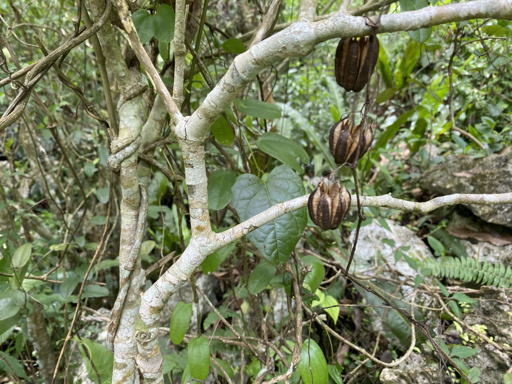
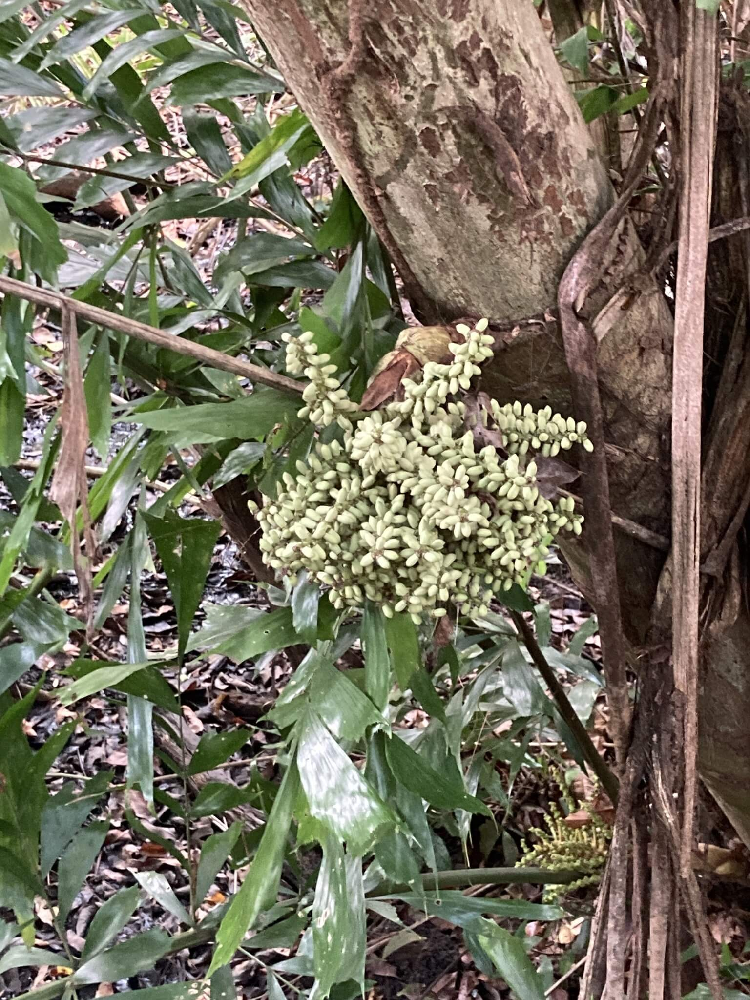
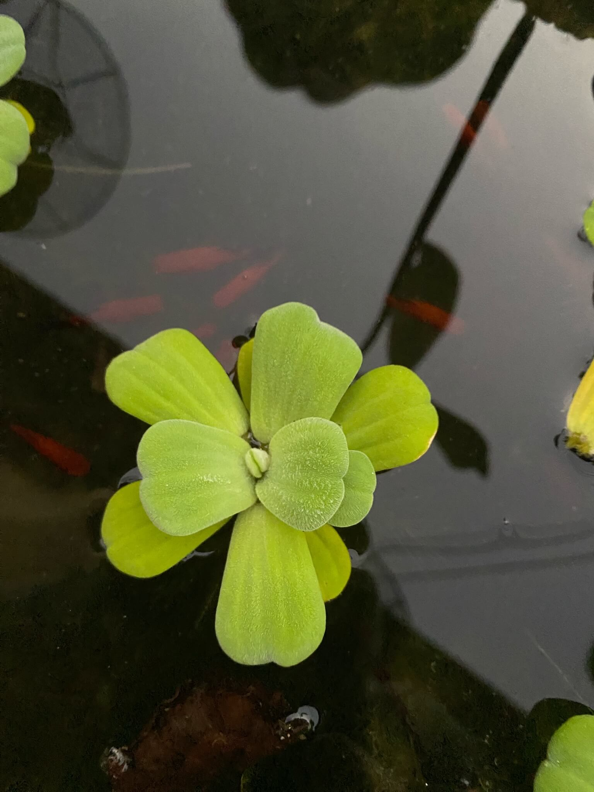
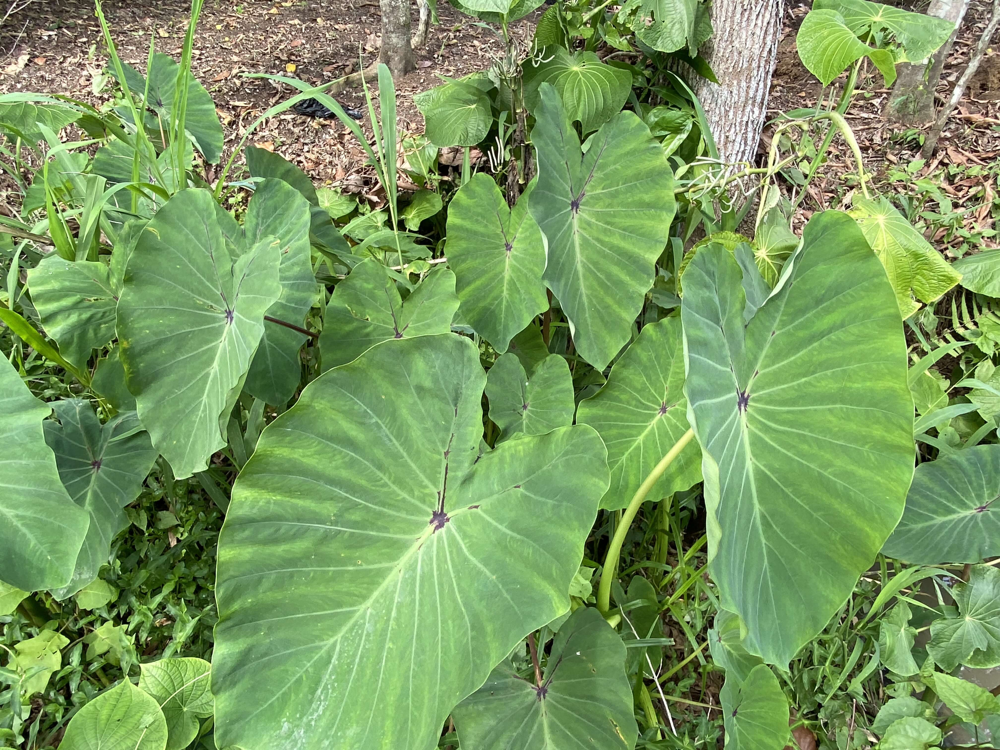
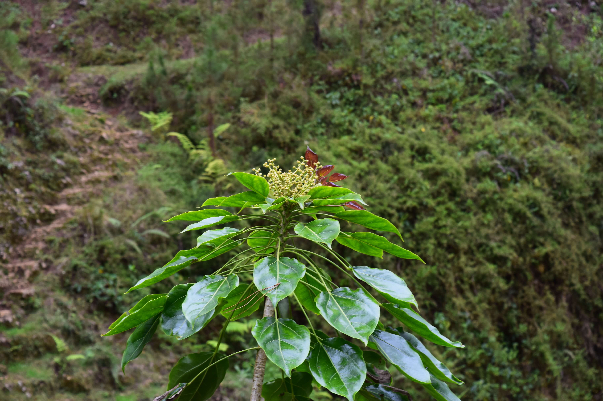
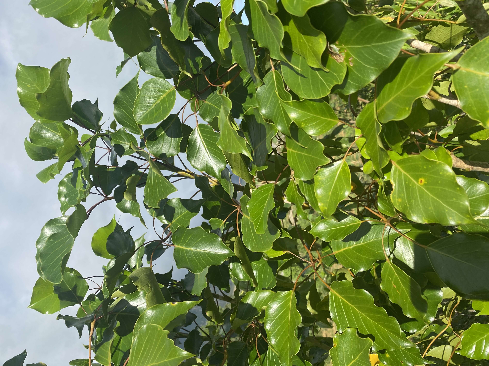
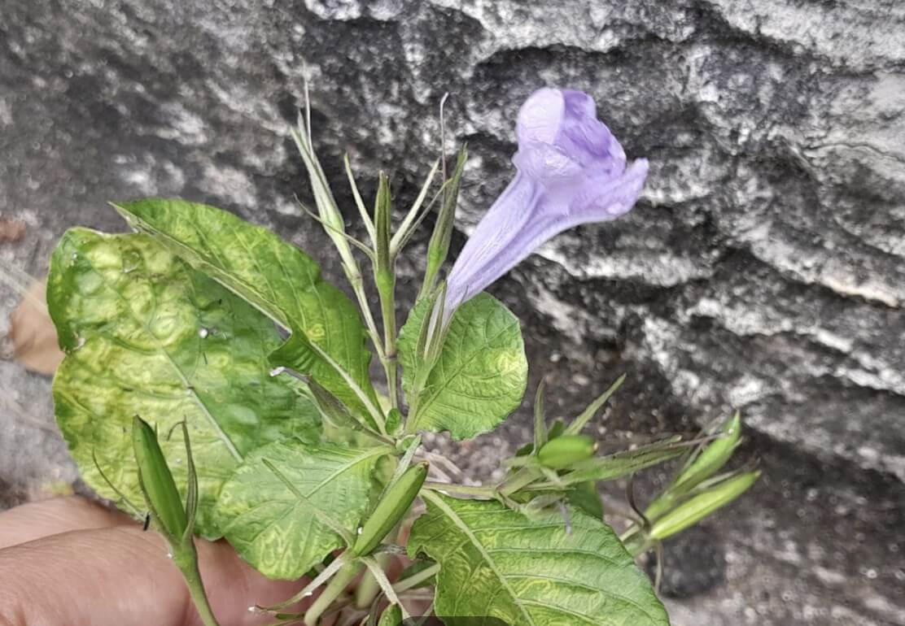

Au service de la vie — Découvrez le patrimoine botanique extraordinaire du Grand Sud et de la Grand'Anse d'Haïti.
Ce projet est le fruit d'une collaboration entre le Jardin Botanique des Cayes (JBC), des guérisseurs traditionnels du Grand Sud, des botanistes, des pharmaciens et des communautés locales qui ont généreusement partagé leurs savoirs ancestraux. Nous tenons à remercier chaleureusement tous ceux qui ont contribué à la collecte, la documentation et la préservation de ces connaissances inestimables sur les plantes médicinales d'Haïti.
Lire les remerciements completsHaïti possède l'une des flores les plus riches et les plus menacées de la Caraïbe, avec plus de 5 600 espèces végétales dont 40% sont endémiques. Pourtant, ce patrimoine reste largement non documenté et en voie de disparition. Le projet PMAA vise à créer la première base de données complète et accessible sur les plantes médicinales, aromatiques et alimentaires du Grand Sud — un outil indispensable pour la santé publique, la recherche scientifique et la conservation de la biodiversité.
Lire la préface complèteLes informations présentées dans cette base de données sont fournies à titre éducatif et informatif uniquement. Elles ne remplacent en aucun cas un avis médical professionnel. L'utilisation des plantes médicinales comporte des risques, notamment des interactions médicamenteuses et des effets toxiques. Consultez toujours un professionnel de santé avant toute utilisation thérapeutique.
Lire l'avertissement completEn Haïti, plus de 80% de la population dépend des plantes médicinales pour ses soins de santé primaires. Cette tradition, héritée des peuples Taïnos et enrichie par les savoirs africains apportés durant la période coloniale, constitue un système médical complexe et efficace qui a permis à des millions de personnes de se soigner pendant des siècles. Le Grand Sud et la Grand'Anse abritent une biodiversité exceptionnelle avec des écosystèmes allant des mangroves côtières aux forêts de montagne du Massif de la Hotte, un hotspot de biodiversité mondiale.
Lire l'introduction complèteLa médecine traditionnelle haïtienne est un héritage millénaire qui puise ses racines dans trois grandes traditions : la pharmacopée des Taïnos, les savoirs botaniques africains transmis par les esclaves, et l'influence de la médecine coloniale européenne. Les « Doktè Fey » — guérisseurs par les plantes — sont les gardiens vivants de ce patrimoine. Leur rôle dans la santé communautaire reste fondamental, particulièrement dans les zones rurales du Grand Sud où l'accès aux structures médicales modernes demeure limité.
Découvrir l'histoire complète
Explorez les plantes médicinales classées selon les systèmes du corps humain qu'elles peuvent soutenir.

Plantes calmantes, anxiolytiques, antidépressives et neuroprotectrices utilisées dans la tradition haïtienne.
Découvrir les plantes →
Plantes pour les troubles gastriques, hépatiques, intestinaux, les coliques et les vers parasitaires.
Découvrir les plantes →
Plantes hypotensives, cardiotoniques et vasculoprotectrices pour la santé du cœur et de la circulation.
Découvrir les plantes →
Plantes expectorantes, antitussives et bronchodilatatrices pour les affections pulmonaires et respiratoires.
Découvrir les plantes →
Plantes immunostimulantes, antivirales, antibactériennes et antifongiques de la pharmacopée haïtienne.
Découvrir les plantes →
Plantes diurétiques, dépuratives et néphroprotectrices pour les affections rénales et urinaires.
Découvrir les plantes →PMAA facilite la collaboration entre décideurs, praticiens, communautés et chercheurs pour valoriser les plantes du Grand Sud.
Savoirs traditionnels, identification et propriétés ancestrales des plantes.
Savoirs TraditionnelsDonnées phytochimiques, protocoles cliniques et evidence-based research.
PraticiensBase de données complète, publications TRAMIL/PubMed et données moléculaires.
RechercheGuides pratiques, recettes, dosages sûrs et santé communautaire.
Santé CommunautaireConservation, biodiversité, aires protégées et gestion durable.
ConservationAgroforesterie, production durable et soutien aux producteurs.
AgriculturePharmacopée nationale, protocoles thérapeutiques et prévention.
Santé PubliqueFilières commerciales, certification et standards d'exportation.
Commerce270+ plantes médicinales, aromatiques et alimentaires du Grand Sud documentées avec fiches complètes.
Accéder à la Base de Données →